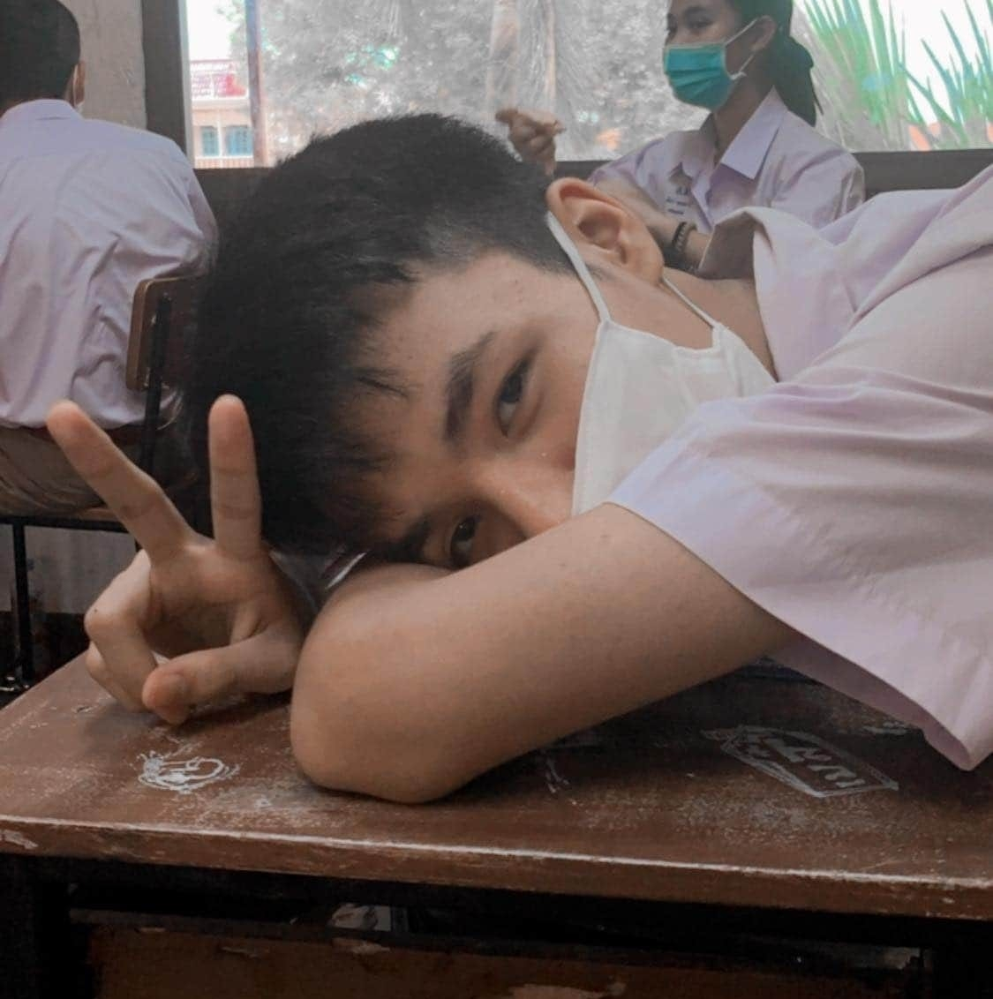
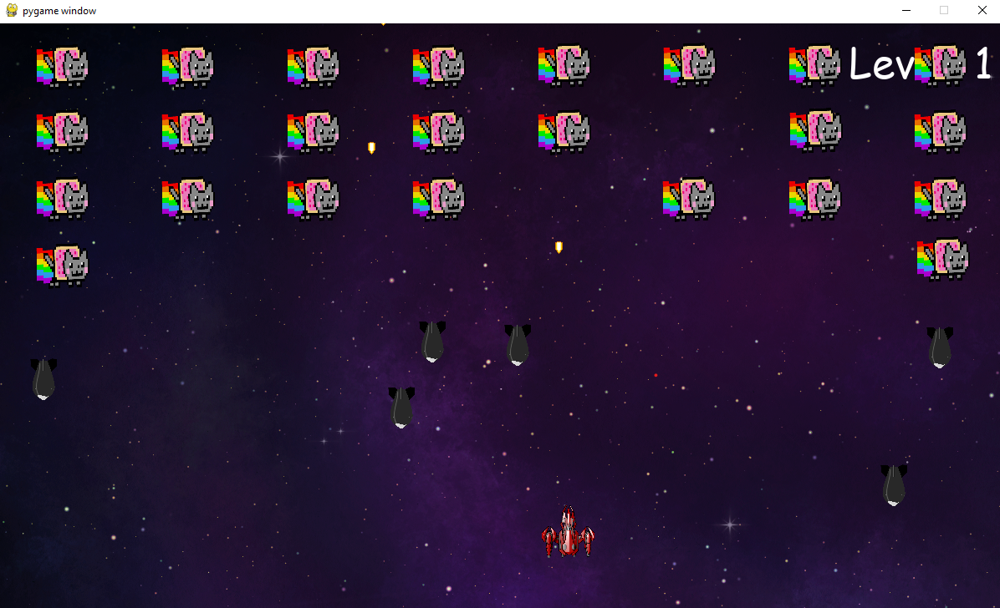
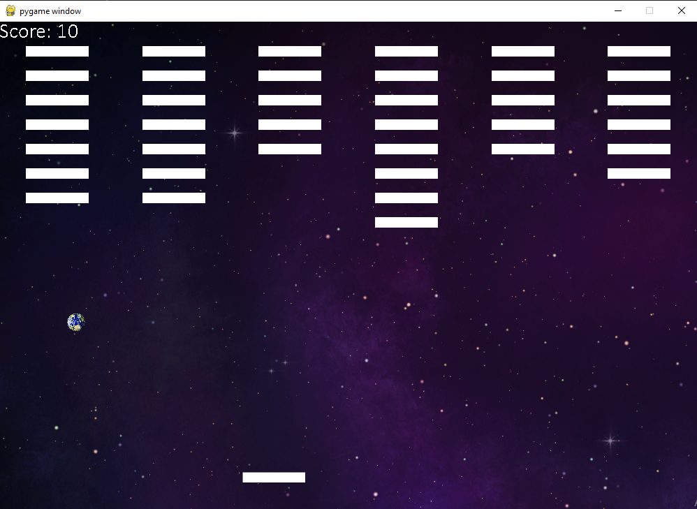
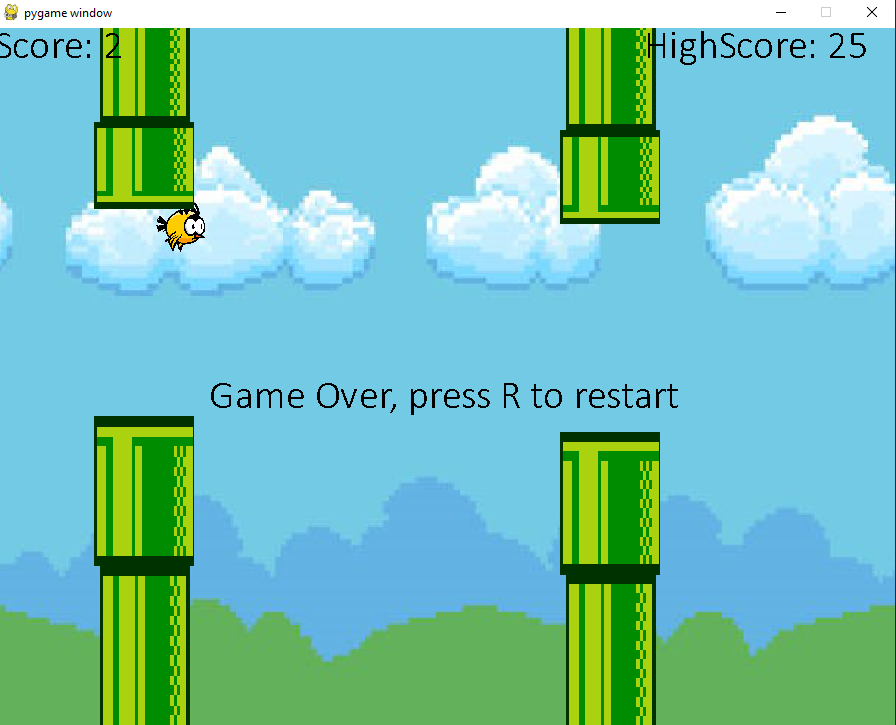
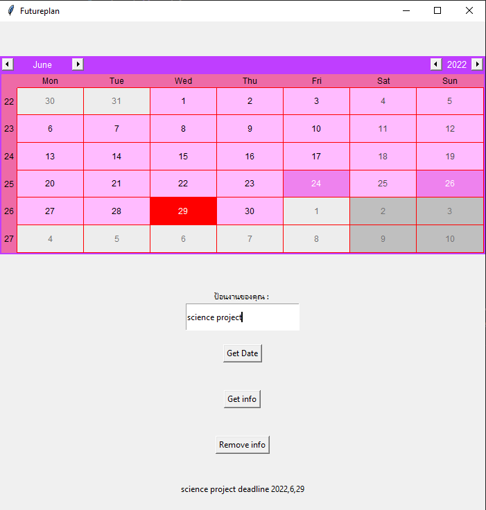

My Profile

ข้อมูลส่วนตัว
ชื่อ-สกุล : ธีร์ อนุสรณ์ศาสน์ ชื่อเล่น: ตี้วันเกิด : 15 กันยายน พ.ศ.2547 อายุ18ปี
สัญชาติ :ไทย เชื้อชาติ :ไทย ศาสนา :พุทธ
Email:anusonsart@gmail.com
เบอร์โทรศัพท์ : 0990453357
งานอดิเรก :เขียนโปรแกรม เล่นเกม
กีฬาที่ชอบ:แบดมินตัน
อาชีพในฝัน:โปรแกรมเมอร์ เนื่องจากเป็นคนที่ชอบทำงานและแก้ปัญหาด้วยคอมพิวเตอร์ และชอบใช้เวลาว่างในการศึกษาเกี่ยวกับการเขียนโปรแกรม
คติประจำใจ:พยามครั้งที่ 100 ดีกว่าคิดท้อถอยก่อนที่จะทำ
ประวัติการศึกษา
ชั้นมัธยมศึกษาตอนต้น :โรงเรียนอำมาตย์พานิชนุกูล ชั้นมัธยมศึกษาตอนปลาย :โรงเรียนอำมาตย์พานิชนุกูลช่องทางการติดต่อ
Facebook :Tee anusonsartInstagram : tee.asnst
ผลงาน

สร้างเกม Nyancat Invader โดยเขียนขึ้นมาด้วยภาษาPython ใช้ library pygame

สร้างเกม EarthPong โดยเขียนขึ้นมาด้วยภาษาPython ใช้ library pygame

สร้างเกมแนว Flappy โดยเขียนขึ้นมาด้วยภาษาPython ใช้ library pygame มีระบบบันทึกสถิติ

แอพวางแผนในปฏิฐิน ใช้ tk ในการสร้าง มีการเซฟข้อมูล สามารถป้อนงานลงไปได้ ลบข้อมูลได้